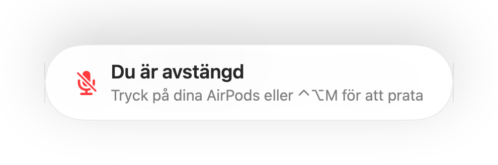

En påminnelse när du är avstängd i alla samtalsappar
Zoom varnar dig när du pratar medan du är avstängd. De flesta andra appar gör det inte, och webbsamtal gör det nästan aldrig. Du förklarar något i en minut och märker sedan att alla väntar.
Muffle känner av när du pratar medan du är avstängd och visar en påminnelse, i vilken app som helst. När samtalet använder AirPods eller hörlurar lyssnar den på din Macs inbyggda mikrofon, och enbart på dess ljudnivå. Inget spelas in.
Slå på påminnelsen
- 1
Installera Muffle och tillåt mikrofonåtkomst.
- 2
Kontrollera att ”Påminn mig när jag pratar när jag är avstängd” är på i Muffle-inställningar.
- 3
Gå med i ett samtal med AirPods eller hörlurar och stäng av mikrofonen.
- 4
Börja prata. Påminnelsen ”Du är avstängd” visas.

- Går du med i ett möte medan mikrofonen fortfarande är tyst från det förra? Muffle påminner dig när samtalet startar.
- Tangentbordsskrivande aktiverar inte påminnelsen. Det gör bara tydligt tal.
Frågor
Fungerar påminnelsen med Macs inbyggda mikrofon?
Den fungerar när samtalet använder AirPods eller hörlurar. Om samtalet använder din Macs egen mikrofon är den mikrofonen avstängd och kan inte höra dig.
Spelas mitt ljud in?
Nej. Muffle mäter bara ljudnivån och sparar eller skickar aldrig något ljud.